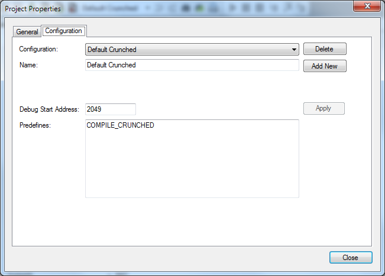

Build Configurations
A project can have one or more configurations. A configuration named "Default" is created with project creation.

A configuration consists of a debug start address (initial breakpoint) and a set of defines which are preset when assembling. Defines allow simply defining a label or setting constants.